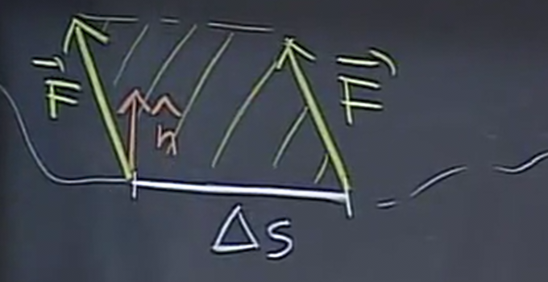
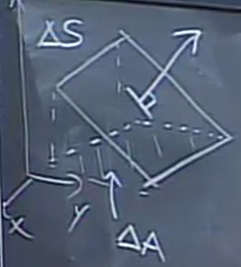

Flux
Table of Contents
1. Flux Through a Curve
The flux in 2D can be defined using a line integral. Given \(C\) as a plane curve and \(F\) as a vector field, the flux of \(\vec{F}\) across \(C\) is defined as:
\begin{align} \int_C \vec{F} \cdot \hat{n} \text{ d}s \end{align}where \(\hat{n}\) is the unit normal vector to \(C\), pointing 90 degrees clockwise from the tangent vector \(\hat{T}\).
1.1. Physical Interpretation
If \(\vec{F}\) is a velocity field, then flux measures how much passes through a curve per unit time. If we consider really small segments of \(C\) with length \(\Delta s\), then we can model the total amount that passes through this segment as a parallelogram like so:

Now, to calculate the area, it is just the base times the height, where the height is the projection of \(\vec{F}\) onto \(\hat{n}\):
\[ A = \Delta s (\vec{F} \cdot \hat{n}) \]
Then, the sum of all of these segments of \(C\) gives us the line integral. The convention is that what flows across \(C\) left to right is positive, and what flows right to left is negative.
1.2. Green's Theorem for Flux
We know that \(\text{d}s\) is the scalar of \(\text{d}r\) from the line integral for work, so we can say that \(\text{d}r = \hat{T}\text{ d}s = \langle \text{d}x, \text{d}y \rangle\), where \(\hat{T}\) is the tangential unit vector. Since \(\hat{n}\) is simply \(\hat{T}\) rotated 90 degrees clockwise, we can say that
\[ \hat{n} \text{ d}s = \langle \text{d}y, -\text{d}x \rangle \]
Therefore, if \(\vec{F} = \langle P,Q \rangle\), we can express our line integral in component form as follows:
\[ \int_C P\text{ d}y - Q \text{ d}x \]
Then, applying Green's Theorem, where \(M=-Q\) and \(N=P\), we have:
\[ \oint_C P\text{ d}y - Q \text{ d}x = \iint_R (P_x + Q_y) \text{ d}A \]
Therefore, Green's Theorem for flux is:
\begin{align} \int_C \vec{F} \cdot \hat{n} \text{ d}s = \iint_R \text{div }\vec{F} \text{ d}A \end{align}The divergence of \(\vec{F}\) is represented by \(\text{div }\vec{F} = P_x + Q_y\).
2. Flux Through a Surface
In 3D space, we measure flux going through a surface; therefore, we will have to use a surface integral, instead of a line integral. Conceptually, it will be very similar to line integrals, but it will have three variables that will be reduced to two, summing up small surfaces.
If we have a vector field \(\vec{F}\) and a surface in space \(S\), we want to know the amount of \(\vec{F}\) that passes through \(S\). The logic will be similar to the one for flux through a curve: we find \(\hat{n}\), the unit normal vector to \(S\). Since there are two different choices for \(\hat{n}\), the one that we choose will be called the orientation of our surface. Then, we have:
\begin{align} \iint_S \vec{F}\cdot\hat{n} \text{ d}S \end{align}Note that \(\hat{n}\text{ d}S\) is also sometimes written together as \(\text{ d}\vec{S}\).
Example: Flux through a sphere
We want to find the flux of the vector field \(\vec{H} = z\hat{k}\) through a sphere of radius \(a\) centered at the origin. It is conventional that we choose the normal vector pointing out. Since on the sphere, \(\sqrt{x^2+y^2+z^2}=a\), our normal vector is:
\[ \hat{n} = \frac{\langle x,y,z \rangle}{a} \]
Thus,
\[ \vec{H} \cdot \hat{n} = \langle 0,0,z \rangle \cdot \frac{\langle x,y,z \rangle}{a} = \frac{z^2}{a} \]
We can then write our double integral as:
\[ \iint_S \frac{z^2}{a} \text{ d}S \]
Now, we wil have to express \(S\) in terms of two variables. Since we are on a sphere, it is natural to use spherical coordinates: we shall use \(\phi\) and \(\theta\). Using these coordinates, we can express a small change in the surface as \(\text{d}S = a^2\sin{\phi}\text{ d}\phi\text{ d}\theta\), and \(z=a\cos\phi\). Therefore, we can set up our double integral as:
\[ \int_{0}^{2\pi} \int_{0}^{\pi} \frac{a^2\cos^2\phi}{a} \cdot a^2\sin\phi \text{ d}\phi\text{ d}\theta \]
2.1. Computing Flux Through a Graph
If a surface \(S\) is the graph of \(z=f(x,y)\), then we have the following expression:
\begin{align} \hat{n}\text{ d}S = \pm \langle -f_x.-f_y,1 \rangle \text{ d}x\text{ d}y \end{align}We can prove this by considering a small section of the surface when we start at \((x,y,f(x,y))\) and change by tiny amounts \(\Delta x\) and \(\Delta y\). This results in a parallelogram shape, which we can find the area of by taking the cross product of the vectors of the two sides. This is also especially convenient because the cross product also returns the unit normal vector, which is exactly what we need.
Call the vector moving in the \(x\) direction \(\vec{u}\), and the vector moving in the \(y\) direction \(\vec{v}\). Then,
\begin{aligned} \vec{u} = \langle x+\Delta x, y, f(x+\Delta x, y)\rangle - \langle x,y,f(x,y) \rangle \\ \vec{v} = \langle x, y+\Delta y, f(x,y+\Delta y)\rangle - \langle x,y,f(x,y) \rangle \end{aligned}Using linear approximation, we can rewrite \(f(x+\Delta x,y)\) to \(f(x,y) + \Delta xf_x\), and vice versa for \(\vec{v}\). Thus,
\begin{aligned} \vec{u} = \langle \Delta x, 0, f_x\Delta x \rangle = \langle 1,0,f_x \rangle \Delta x \\ \vec{v} = \langle 0, \Delta y, f_y\Delta y \rangle = \langle 0,1,f_y \rangle \Delta y \\ \end{aligned}We can now do the cross product, which comes out to be:
\[ \vec{n}\Delta S = \vec{u} \times \vec{v} = \langle -f_x,-f_y,1 \rangle \Delta x \Delta y \]
2.2. Implicit Surfaces
Lots of times we want to do the surface integral if we know the normal vector \(\vec{N}\) to the surface. This occurs, for example, when we have a plane, or a function \(g(x,y,z)=0\) where we can obtain the normal vector through the gradient.
Consider the projection of the surface onto the xy plane, \(\Delta A\), and the angle it makes it with as \(\alpha\):

We can see that \(\Delta S = \cos \alpha \Delta A\). To find \(\cos \alpha\), consider that \(\alpha\) is also equivalent to the angle made between the normal vectors of the surface, \(\vec{N}\), and the projection, \(\hat{k}\). Thus:
\[ \Delta A = \Delta S \cos \alpha = \Delta S \frac{\vec{N}\cdot\hat{k}}{|\vec{N}|} \]
Then, \(\Delta S\) is:
\[ \Delta S = \frac{|\vec{N}|}{\vec{N} \cdot \hat{k}} \Delta A \]
Now, consider \(\hat{n}\Delta S\):
\[ \hat{n}\Delta S = \frac{|\vec{N}|\hat{n}}{\vec{N} \cdot \hat{k}} \Delta A = \pm \frac{\vec{N}}{\vec{N} \cdot \hat{k}} \Delta x \Delta y \]
Therefore, we can write that:
\begin{align} \hat{n}\text{ d}S = \pm \frac{\vec{N}}{\vec{N} \cdot \hat{k}} \text{ d}x\text{ d}y \end{align}